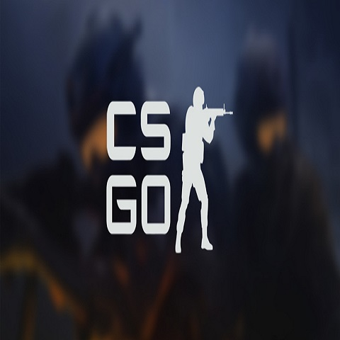

|  |
Counter-Strike: Global Offensive (CS:GO) es un videojuego de disparos en primera persona desarrollado por Valve Corporation en cooperación con Hidden Path Entertainment, y es el cuarto juego de la saga Counter-Strike, sin contar Counter-Strike: Online. Fue lanzado como beta al mercado el 21 de agosto de 2012 para las plataformas de Microsoft Windows, Mac OS X y Xbox 360, mientras que sufrió un retraso en PlayStation 3. Posteriormente, la versión para Linux estuvo disponible al público el 22 de septiembre de 2014. |
Terroritas y Policias |